2026
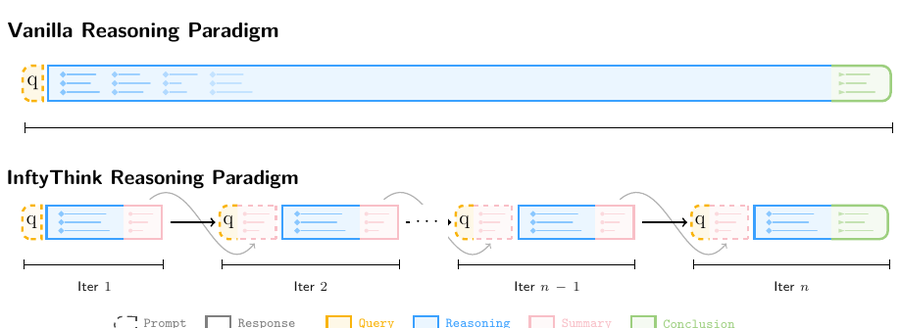
InftyThink+: Effective and Efficient Infinite-Horizon Reasoning via Reinforcement Learning
Yuchen Yan, Liang Jiang, Jin Jiang, Shuaicheng Li, Zujie Wen, Zhiqiang Zhang, Jun Zhou, Jian Shao, Yueting Zhuang, Yongliang Shen
ICML 2026 NEW
Milestone-Guided Policy Learning for Long-Horizon Language Agents
Zixuan Wang, Yuchen Yan, Hongxing Li, Teng Pan, Dingming Li, Ruiqing Zhang, Weiming Lu, Jun Xiao, Yueting Zhuang, Yongliang Shen
ICML 2026 NEW
Beyond Literal Translation: Evaluating Cultural Effectiveness in Social Media UGC
Linjuan Wu, Ruiqi Zhang, Xinze Lyu, Ye Guo, Daoxin Zhang, Zhe Xu, Yao Hu, Yixin Cao, Yongliang Shen, Weiming Lu
ICML 2026 NEW
Context-Aware Reasoner: Enhancing Contextual Reasoning in Multimodal Large Language Models
Zhe Zheng, Wenqi Zhang, Xiaohe Zhou, Guiyang Hou, Xinyu Mei, Tianyang Mao, Anni Piao, Shengpei Jiang, Yongliang Shen, Yueting Zhuang, Weiming Lu
ICML 2026 NEW
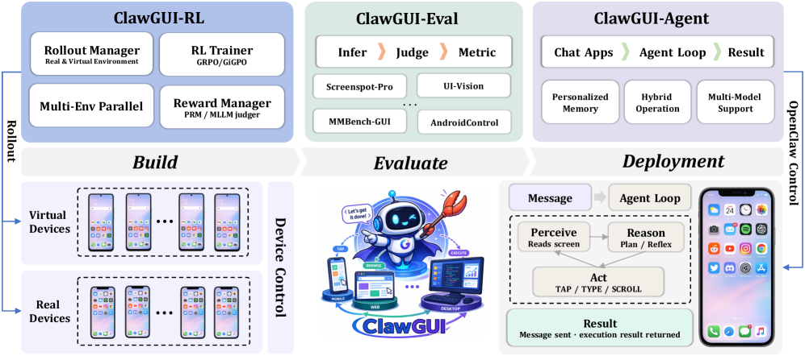
ClawGUI: A Unified Framework for Training, Evaluating, and Deploying GUI Agents
Fei Tang, Zhiqiong Lu, Boxuan Zhang, Weiming Lu, Jun Xiao, Yueting Zhuang, Yongliang Shen
arXiv preprint, 2026 NEW
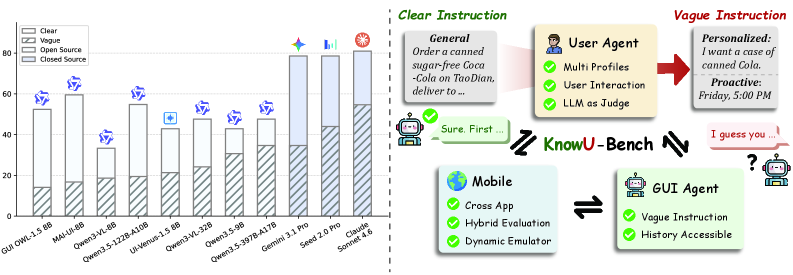
KnowU-Bench: Towards Interactive, Proactive, and Personalized Mobile Agent Evaluation
Tongbo Chen, Zhengxi Lu, Zhan Xu, Guocheng Shao, Shaohan Zhao, Fei Tang, Yong Du, Kaitao Song, Yizhou Liu, Yuchen Yan, Wenqi Zhang, Xu Tan, Weiming Lu, Jun Xiao, Yueting Zhuang, Yongliang Shen
arXiv preprint, 2026 NEW
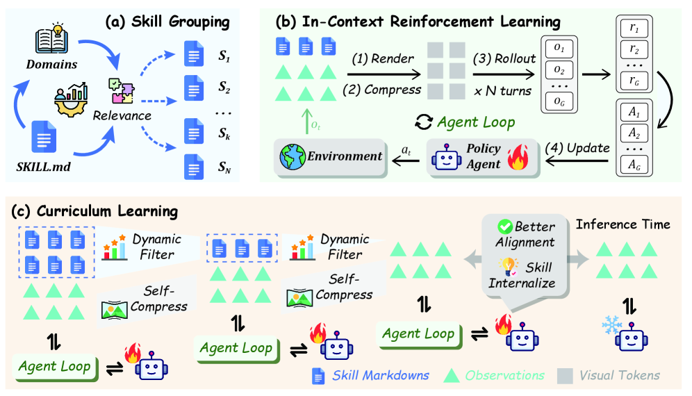
Skill0: In-Context Agentic Reinforcement Learning for Skill Internalization
Zhengxi Lu, Zhiyuan Yao, Jinyang Wu, Chengcheng Han, Qi Gu, Xunliang Cai, Weiming Lu, Jun Xiao, Yueting Zhuang, Yongliang Shen
arXiv preprint, 2026 NEW
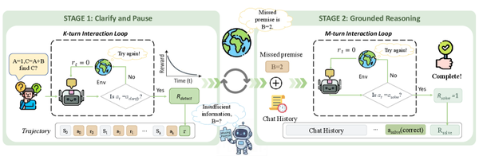
Pause or Fabricate? Training Language Models for Grounded Reasoning
Yiwen Qiu, Linjuan Wu, Yizhou Liu, Yuchen Yan, Jin Ma, Xu Tan, Yao Hu, Daoxin Zhang, Wenqi Zhang, Weiming Lu, Jun Xiao, Yongliang Shen
ACL 2026 (Findings) NEW
GUI-SAGE: Enhancing GUI Automation with Self-Explanatory Learning
Fei Tang, Zhangxuan Gu, Zhengxi Lu, Shangzhan Zhang, Zhengwen Zeng, Shuheng Shen, Changhua Meng, Yuchen Yan, Wenqi Zhang, Yongliang Shen, Weiming Lu, Yueting Zhuang
CVPR 2026
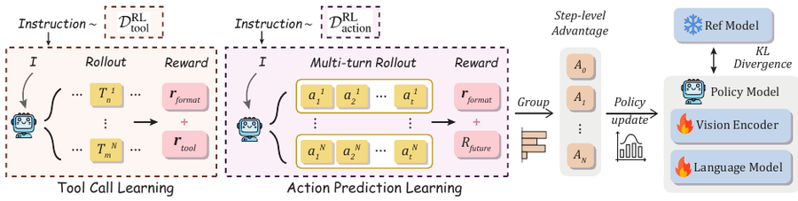
UI-Copilot: Advancing Long-Horizon GUI Automation via Tool-Integrated Policy Optimization
Zhengxi Lu, Fei Tang, Guangyi Liu, Kaitao Song, Xu Tan, Jin Ma, Wenqi Zhang, Weiming Lu, Jun Xiao, Yueting Zhuang, Yongliang Shen
ACL 2026
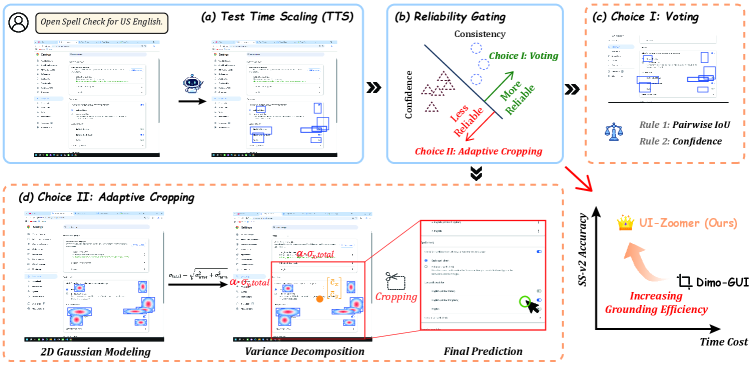
UI-Zoomer: Uncertainty-Driven Adaptive Zoom-In for GUI Grounding
Fei Tang, Bofan Chen, Zhengxi Lu, Tongbo Chen, Songqin Nong, Tao Jiang, Wenhao Xu, Weiming Lu, Jun Xiao, Yueting Zhuang, Yongliang Shen
arXiv preprint, 2026
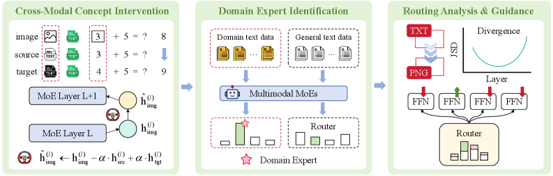
Seeing but Not Thinking: Routing Distraction in Multimodal Mixture-of-Experts
Haolei Xu, Haiwen Hong, Hongxing Li, Rui Zhou, Yang Zhang, Longtao Huang, Hui Xue, Yongliang Shen, Weiming Lu, Yueting Zhuang
ACL 2026
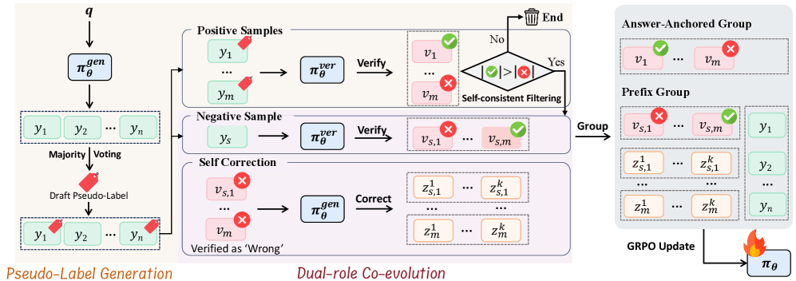
CoVerRL: Breaking the Consensus Trap in Label-Free Reasoning via Generator-Verifier Co-Evolution
Teng Pan, Yuchen Yan, Zixuan Wang, Ruiqing Zhang, Guiyang Hou, Wenqi Zhang, Weiming Lu, Jun Xiao, Yongliang Shen
ACL 2026
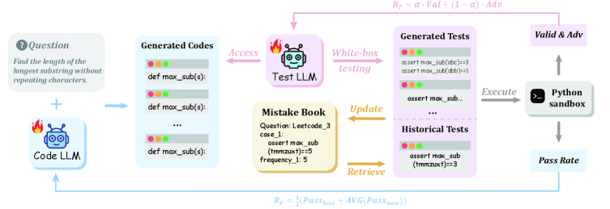
Code-A1: Adversarial Evolving of Code LLM and Test LLM via Reinforcement Learning
Aozhe Wang, Yuchen Yan, Nan Zhou, Zhengxi Lu, Weiming Lu, Jun Xiao, Yueting Zhuang, Yongliang Shen
arXiv preprint, 2026
Reality vs Counterfactual: Multi-World Contrastive Reinforcement Learning for Enhancing MLLM's Theory of Mind in Egocentric Videos
Guiyang Hou, Yihui Fu, Chen Wu, Xiang Huang, Zhe Zheng, Wenqi Zhang, Yongliang Shen, Weiming Lu
AAAI 2026 (Oral)
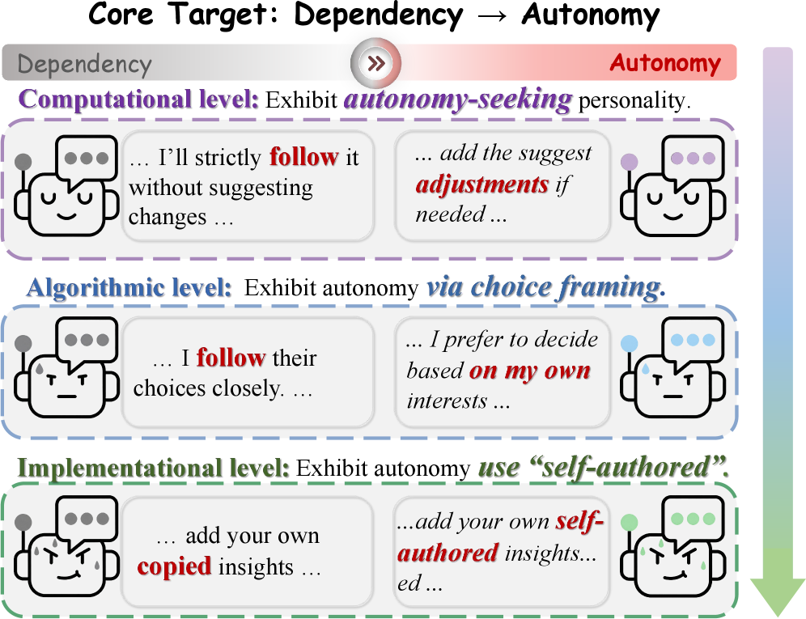
How Controllable Are Large Language Models? A Unified Evaluation across Behavioral Granularities
Ziwen Xu, Kewei Xu, Haoming Xu, Haiwen Hong, Longtao Huang, Hui Xue, Ningyu Zhang, Yongliang Shen, Guozhou Zheng, Huajun Chen, Shumin Deng
ACL 2026
Label-Free GUI Grounding via Confidence-Guided Negative Reinforcement Learning
Yizhou Liu, Fei Tang, Yuchen Yan, Zhengxi Lu, Wenqi Zhang, Yongliang Shen, Weiming Lu, Jun Xiao, Yueting Zhuang
2026
2025
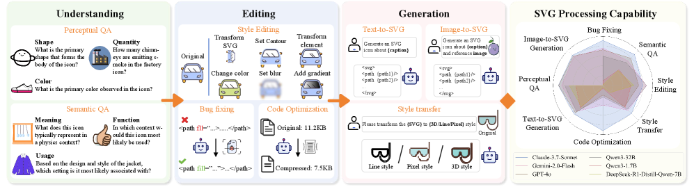
SVGenius: Benchmarking LLMs in SVG Understanding, Editing and Generation
Siqi Chen, Xinyu Dong, Haolei Xu, Xingyu Wu, Fei Tang, Hang Zhang, Yuchen Yan, Linjuan Wu, Wenqi Zhang, Guiyang Hou, Yongliang Shen, Weiming Lu, Yueting Zhuang
ACM Multimedia 2025
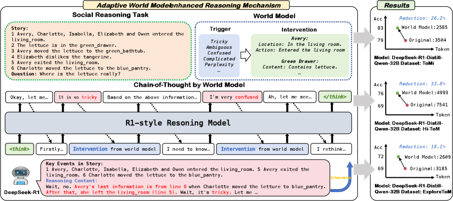
Active Confusion Expression in Large Language Models: Leveraging World Models toward Better Social Reasoning
Jialu Du, Guiyang Hou, Yihui Fu, Chen Wu, Wenqi Zhang, Yongliang Shen, Weiming Lu
arXiv preprint, 2025
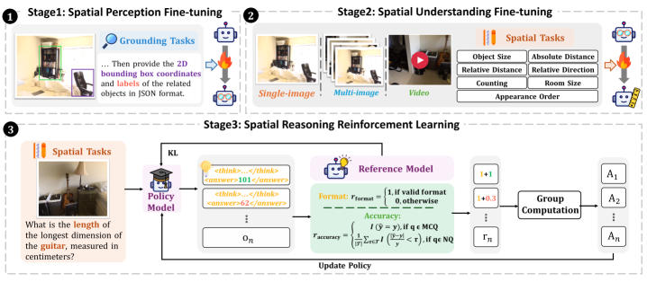
SpatialLadder: Progressive Training for Spatial Reasoning in Vision-Language Models
Hongxing Li, Dingming Li, Zixuan Wang, Yuchen Yan, Hang Wu, Wenqi Zhang, Yongliang Shen, Weiming Lu, Jun Xiao, Yueting Zhuang
ICLR 2026
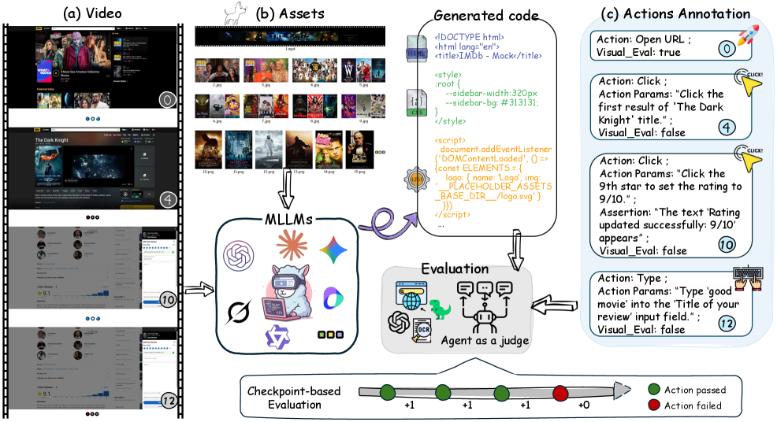
IWR-Bench: Can LVLMs Reconstruct Interactive Webpage from a User Interaction Video?
Yang Chen, Minghao Liu, Yufan Shen, Yunwen Li, Tianyuan Huang, Xinyu Fang, Tianyu Zheng, Wenxuan Huang, Cheng Yang, Daocheng Fu, Jianbiao Mei, Rong Wu, Yunfei Zhao, Licheng Wen, Xuemeng Yang, Song Mao, Qunshu Lin, Zhi Yu, Yongliang Shen, Yu Qiao, Botian Shi
ICLR 2026
GSM8K-V: Can Vision Language Models Solve Grade School Math Word Problems in Visual Contexts
Fan Yuan, Yuchen Yan, Yifan Jiang, Haoran Zhao, Tao Feng, Jinyan Chen, Yanwei Lou, Wenqi Zhang, Yongliang Shen, Weiming Lu, Jun Xiao, Yueting Zhuang
arXiv preprint, 2025
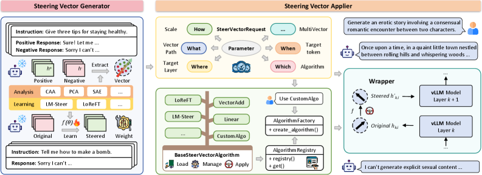
EasySteer: A Unified Framework for High-Performance and Extensible LLM Steering
Haolei Xu, Xinyu Mei, Yuchen Yan, Ruofan Zhou, Wenqi Zhang, Weiming Lu, Yueting Zhuang, Yongliang Shen
arXiv preprint, 2025
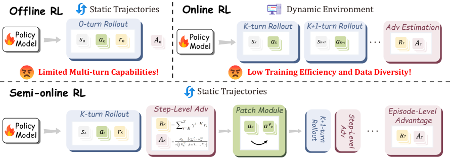
UI-S1: Advancing GUI Automation via Semi-Online Reinforcement Learning
Zhengxi Lu, Jiabo Ye, Fei Tang, Yongliang Shen, Haiyang Xu, Ziwei Zheng, Weiming Lu, Ming Yan, Fei Huang, Jun Xiao, Yueting Zhuang
arXiv preprint, 2025
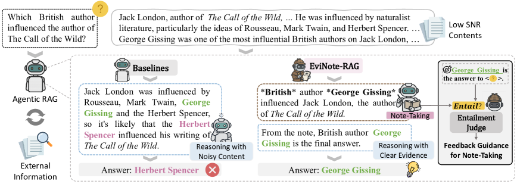
EviNote-RAG: Enhancing RAG Models via Answer-Supportive Evidence Notes
Yuqin Dai, Guoqing Wang, Yuan Wang, Kairan Dou, Kaichen Zhou, Zhanwei Zhang, Shuo Yang, Fei Tang, Jun Yin, Pengyu Zeng, Zhenzhe Ying, Can Yi, Changhua Meng, Yuchen Zhou, Yongliang Shen, Shuai Lu
arXiv preprint, 2025
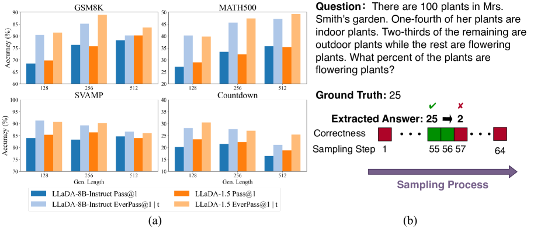
Time Is a Feature: Exploiting Temporal Dynamics in Diffusion Language Models
Wen Wang, Bozhen Fang, Chenchen Jing, Yongliang Shen, Yangyi Shen, Qiuyu Wang, Hao Ouyang, Hao Chen, Chunhua Shen
ICLR 2026
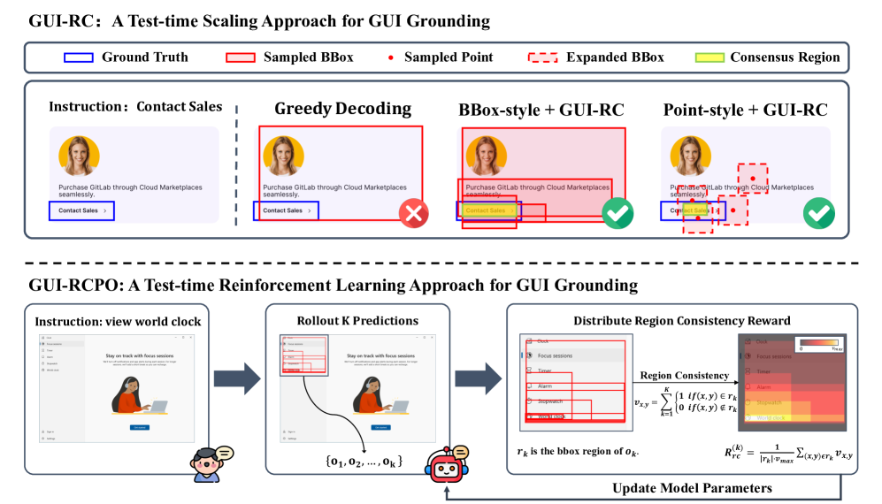
Test-Time Reinforcement Learning for GUI Grounding via Region Consistency
Yong Du, Yuchen Yan, Fei Tang, Zhengxi Lu, Chang Zong, Weiming Lu, Shengpei Jiang, Yongliang Shen
AAAI 2026
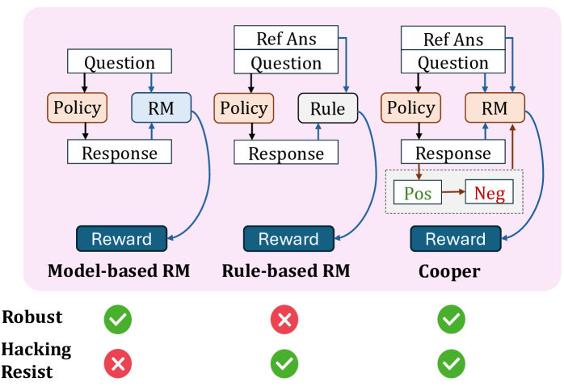
Cooper: Co-Optimizing Policy and Reward Models in Reinforcement Learning for Large Language Models
Haitao Hong, Yuchen Yan, Xingyu Wu, Guiyang Hou, Wenqi Zhang, Weiming Lu, Yongliang Shen, Jun Xiao
arXiv preprint, 2025
OmniEAR: Benchmarking Agent Reasoning in Embodied Tasks
Zixuan Wang, Dingming Li, Hongxing Li, Siqi Chen, Yuchen Yan, Wenqi Zhang, Yongliang Shen, Weiming Lu, Jun Xiao, Yueting Zhuang
arXiv preprint, 2025
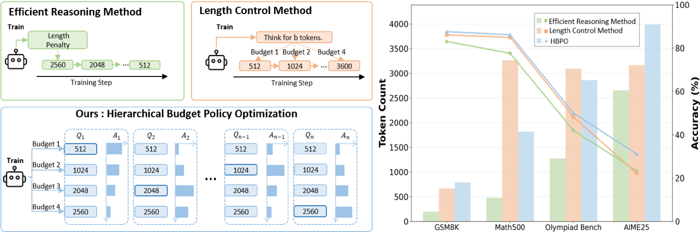
Hierarchical Budget Policy Optimization for Adaptive Reasoning
Shangke Lyu, Linjuan Wu, Yuchen Yan, Xingyu Wu, Hao Li, Yongliang Shen, Peisheng Jiang, Weiming Lu, Jun Xiao, Yueting Zhuang
arXiv preprint, 2025
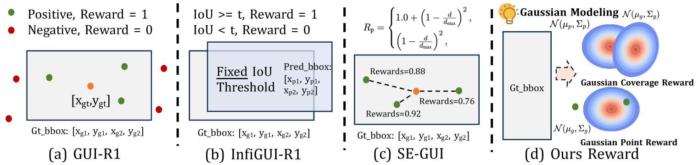
GUI-G²: Gaussian Reward Modeling for GUI Grounding
Fei Tang, Zhangxuan Gu, Zhengxi Lu, Xuyang Liu, Shuheng Shen, Changhua Meng, Wen Wang, Wenqi Zhang, Yongliang Shen, Weiming Lu, Jun Xiao, Yueting Zhuang
AAAI 2026
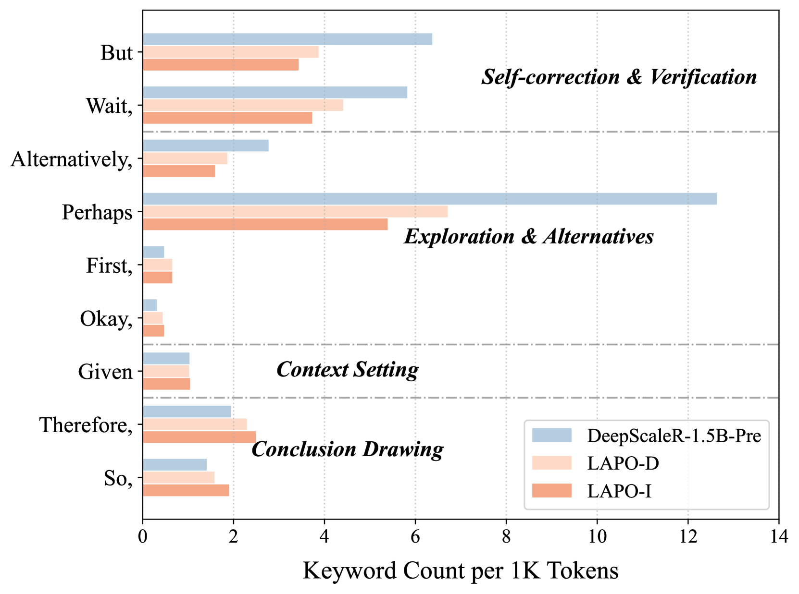
LAPO: Internalizing Reasoning Efficiency via Length-Adaptive Policy Optimization
Xingyu Wu, Yuchen Yan, Shangke Lyu, Linjuan Wu, Yiwen Qiu, Yongliang Shen, Weiming Lu, Jian Shao, Jun Xiao, Yueting Zhuang
arXiv preprint, 2025
Scaling LLMs' Social Reasoning: Sprinkle Cognitive "Aha Moment" into Fundamental Long-Thought Logical Capabilities
Guiyang Hou, Wenqi Zhang, Zhe Zheng, Yongliang Shen, Weiming Lu
ACL 2025 (Findings)
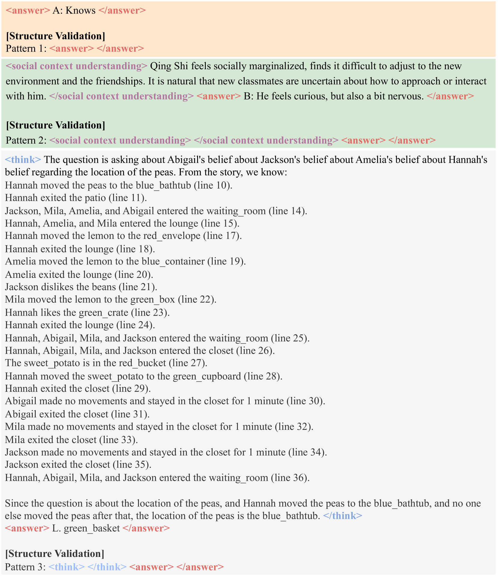
TimeHC-RL: Temporal-Aware Hierarchical Cognitive Reinforcement Learning for Enhancing LLMs' Social Intelligence
Guiyang Hou, Xing Gao, Yuchuan Wu, Xiang Huang, Wenqi Zhang, Zhe Zheng, Yongliang Shen, Jialu Du, Fei Huang, Yongbin Li, Weiming Lu
arXiv preprint, 2025
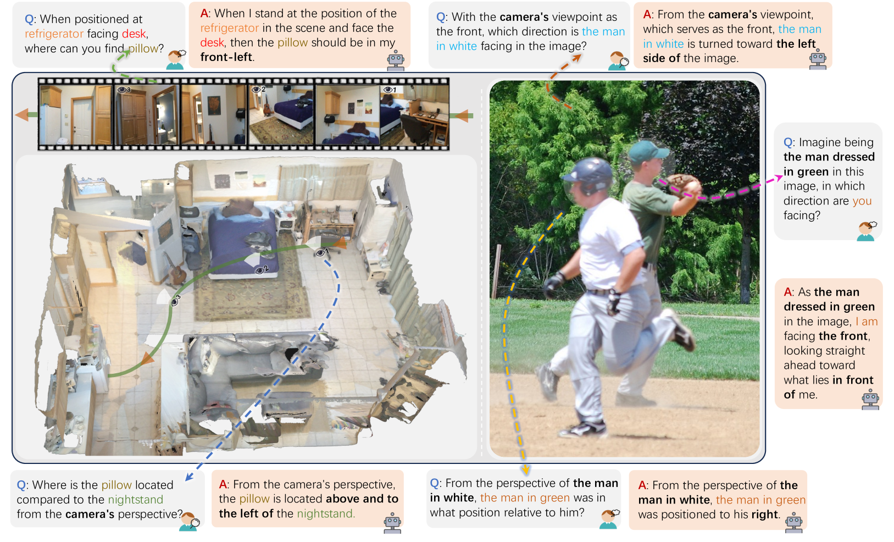
ViewSpatial-Bench: Evaluating Multi-Perspective Spatial Localization in Vision-Language Models
Dingming Li, Hongxing Li, Zixuan Wang, Yuchen Yan, Hang Zhang, Siqi Chen, Guiyang Hou, Shengpei Jiang, Wenqi Zhang, Yongliang Shen, Weiming Lu, Yueting Zhuang
arXiv preprint, 2025
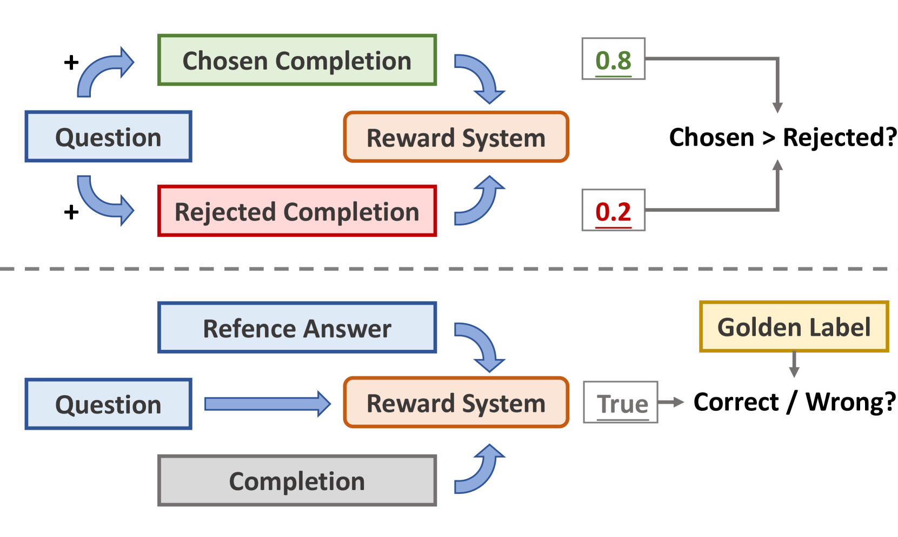
VerifyBench: Benchmarking Reference-Based Reward Systems for Large Language Models
Yuchen Yan, Jin Jiang, Zhenbang Ren, Yijun Li, Xudong Cai, Yang Liu, Xin Xu, Mengdi Zhang, Jian Shao, Yongliang Shen, Jun Xiao, Yueting Zhuang
ICLR 2026
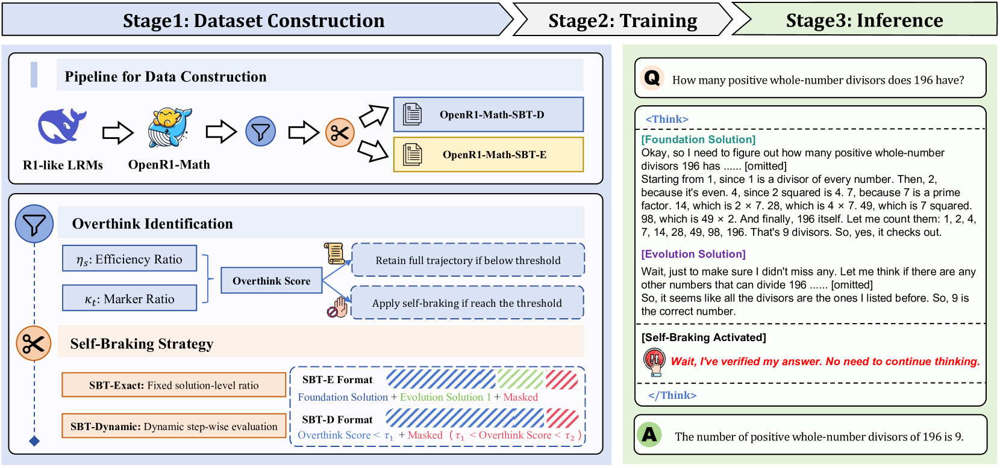
Let LLMs Break Free from Overthinking via Self-Braking Tuning
Haoran Zhao, Yuchen Yan, Yongliang Shen, Haolei Xu, Wenqi Zhang, Kaitao Song, Jian Shao, Weiming Lu, Jun Xiao, Yueting Zhuang
NeurIPS 2025
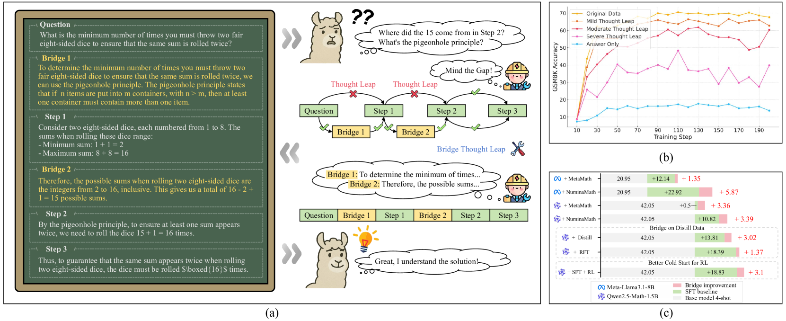
Mind the Gap: Bridging Thought Leap for Improved Chain-of-Thought Tuning
Haolei Xu, Yuchen Yan, Yongliang Shen, Wenqi Zhang, Guiyang Hou, Shengpei Jiang, Kaitao Song, Weiming Lu, Jun Xiao, Yueting Zhuang
NeurIPS 2025
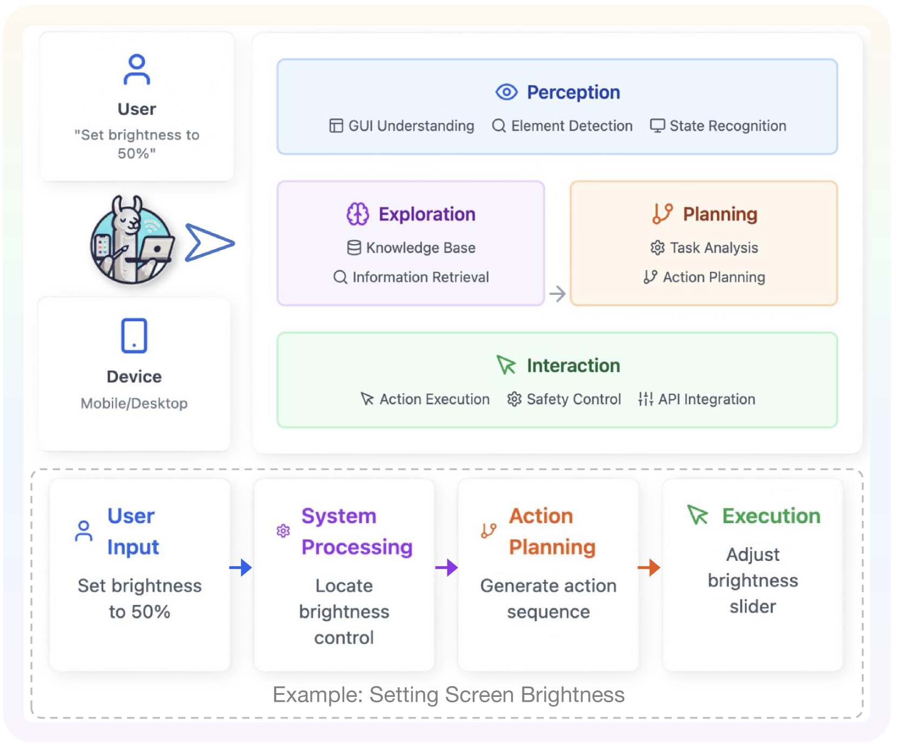
A Survey on (M)LLM-Based GUI Agents
Fei Tang, Haolei Xu, Hang Zhang, Siqi Chen, Xingyu Wu, Yongliang Shen, Wenqi Zhang, Guiyang Hou, Zeqi Tan, Yuchen Yan, Kaitao Song, Jian Shao, Weiming Lu, Jun Xiao, Yueting Zhuang
arXiv preprint, 2025
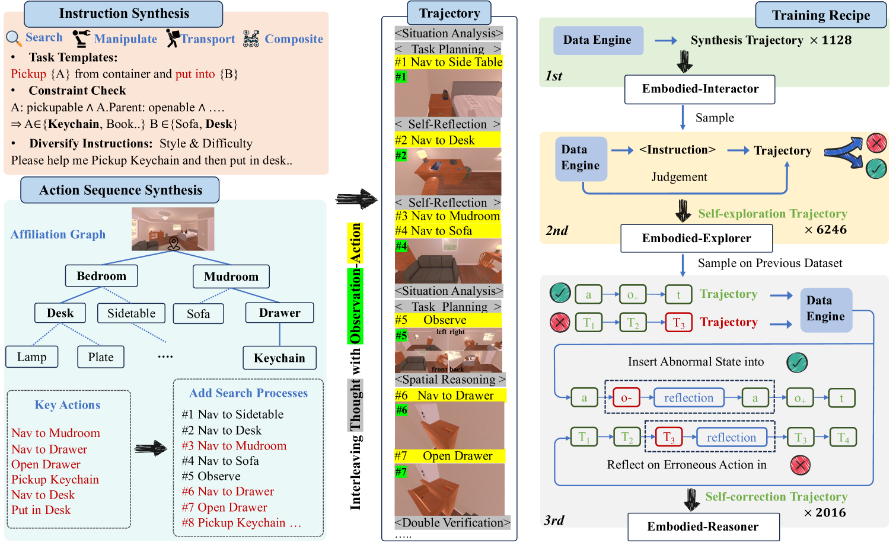
Embodied-Reasoner: Synergizing Visual Search, Reasoning, and Action for Embodied Interactive Tasks
Wenqi Zhang, Mengna Wang, Gangao Liu, Huixin Xu, Yiwei Jiang, Yongliang Shen, Guiyang Hou, Zhe Zheng, Hang Zhang, Xin Li, Weiming Lu, Peng Li, Yueting Zhuang
EMNLP 2024
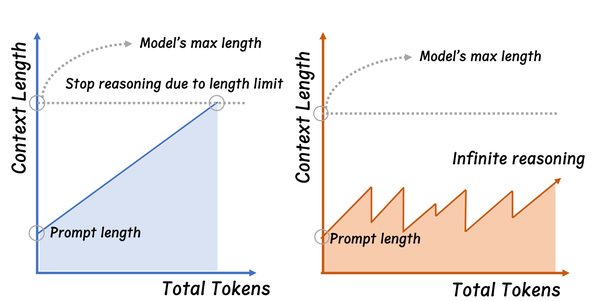
InftyThink: Breaking the Length Limits of Long-Context Reasoning in Large Language Models
Yuchen Yan, Yongliang Shen, Yang Liu, Jin Jiang, Mengdi Zhang, Jian Shao, Yueting Zhuang
ICLR 2026
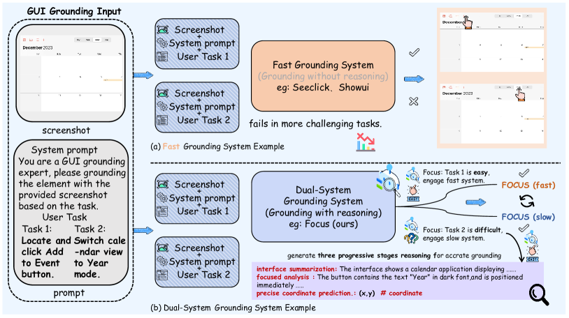
Think Twice, Click Once: Enhancing GUI Grounding via Fast and Slow Systems
Fei Tang, Yongliang Shen, Hang Zhang, Siqi Chen, Guiyang Hou, Wenqi Zhang, Wenqiao Zhang, Kaitao Song, Weiming Lu, Yueting Zhuang
arXiv preprint, 2025
DB-Explore: Automated Database Exploration and Instruction Synthesis for Text-to-SQL
Haoyuan Ma, Yongliang Shen, Hengwei Liu, Wenqi Zhang, Haolei Xu, Qiuying Peng, Jun Wang, Weiming Lu
EMNLP 2025 (Findings)
AskToAct: Enhancing LLMs Tool Use via Self-Correcting Clarification
Xuan Zhang, Yongliang Shen, Zhe Zheng, Linjuan Wu, Wenqi Zhang, Yuchen Yan, Qiuying Peng, Jun Wang, Weiming Lu
EMNLP 2025
STaR-SQL: Self-Taught Reasoner for Text-to-SQL
Mingqian He, Yongliang Shen, Wenqi Zhang, Qiuying Peng, Jun Wang, Weiming Lu
ACL 2025
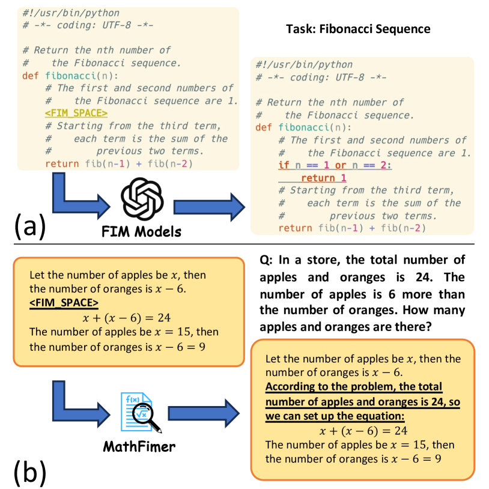
MathFimer: Enhancing Mathematical Reasoning by Expanding Reasoning Steps through Fill-in-the-Middle Task
Yuchen Yan, Yongliang Shen, Yang Liu, Jin Jiang, Xin Xu, Mengdi Zhang, Jian Shao, Yueting Zhuang
ICLR 2026
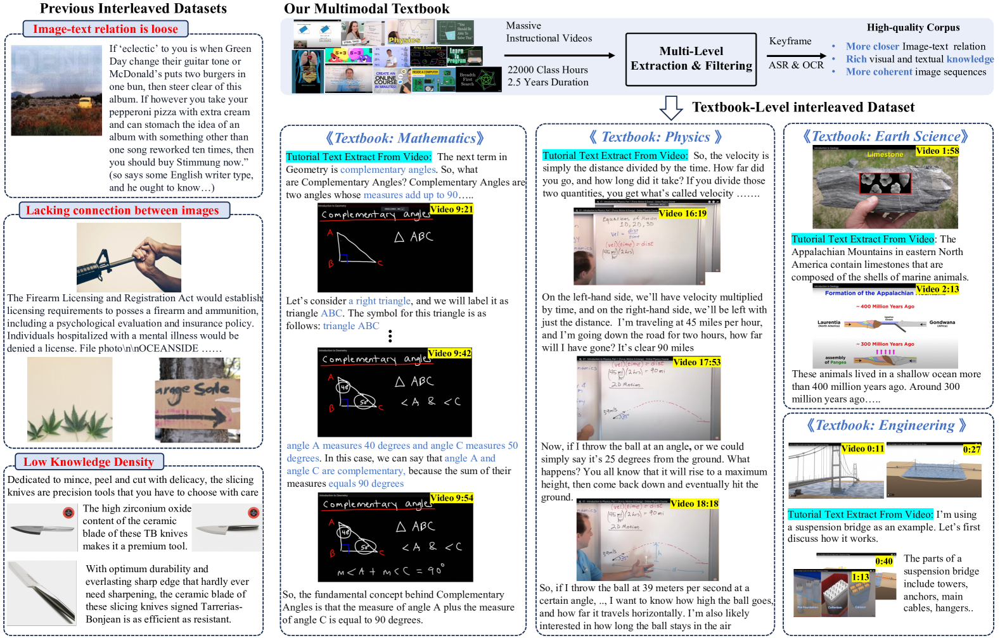
2.5 Years in Class: A Multimodal Textbook for Vision-Language Pretraining
Wenqi Zhang, Hang Zhang, Xin Li, Jiashu Sun, Yongliang Shen, Weiming Lu, Deli Zhao, Yueting Zhuang, Lidong Bing
ICCV 2025
Chain-of-Model Learning for Language Model
Kaitao Song, Xiaohua Wang, Xu Tan, Huiqiang Jiang, Chengruidong Zhang, Yongliang Shen, Cen Lu, Zihao Li, Zifan Song, Caihua Shan, Yansen Wang, Kan Ren, Xiaoqing Zheng, Tao Qin, Yuqing Yang, Dongsheng Li, Lili Qiu
NeurIPS 2025
2024
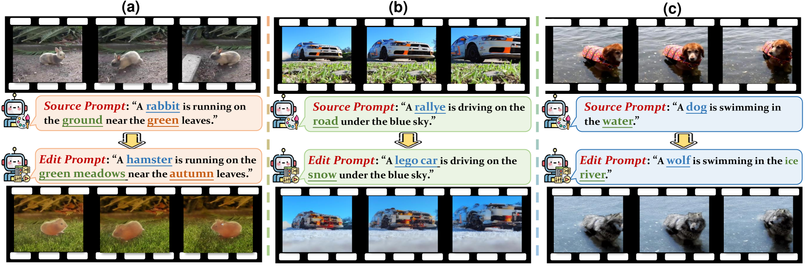
MAKIMA: Tuning-Free Multi-Attribute Open-Domain Video Editing via Mask-Guided Attention Modulation
Haoyu Zheng, Wenqiao Zhang, Zheqi Lv, Yu Zhong, Yang Dai, Jianxiang An, Yongliang Shen, Juncheng Li, Dongping Zhang, Siliang Tang, Yueting Zhuang
arXiv preprint, 2024
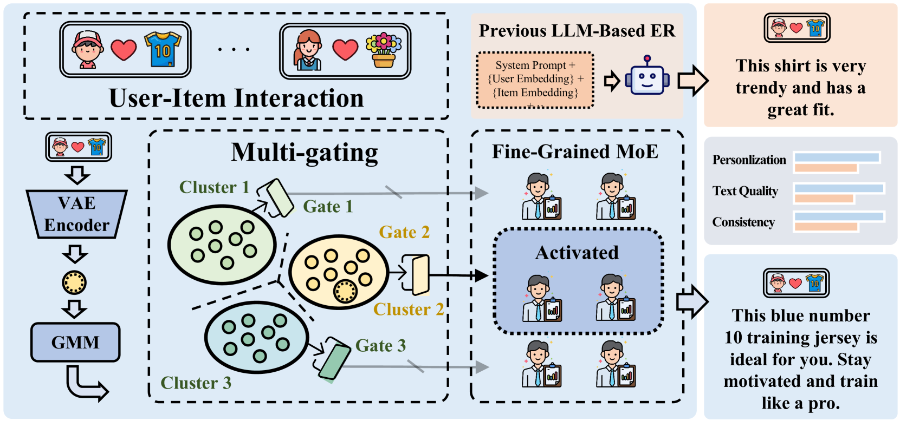
GaVaMoE: Gaussian-Variational Gated Mixture of Experts for Explainable Recommendation
Fei Tang, Yongliang Shen, Hang Zhang, Zeqi Tan, Wenqi Zhang, Zhibiao Huang, Kaitao Song, Weiming Lu, Yueting Zhuang
arXiv preprint, 2024
EgoSocialArena: Benchmarking the Social Intelligence of Large Language Models from a First-Person Perspective
Guiyang Hou, Wenqi Zhang, Yongliang Shen, Zeqi Tan, Sihao Shen, Weiming Lu
arXiv preprint, 2024
Insert or Attach: Taxonomy Completion via Box Embedding
Wei Xue, Yongliang Shen, Wenqi Ren, Jietian Guo, Shiliang Pu, Weiming Lu
ACL 2024
Learning Global Controller in Latent Space for Parameter-Efficient Fine-Tuning
Zeqi Tan, Yongliang Shen, Xiaoxia Cheng, Chang Zong, Wenqi Zhang, Jian Shao, Weiming Lu, Yueting Zhuang
ACL 2024
Progressive Tuning: Towards Generic Sentiment Abilities for Large Language Models
Guiyang Hou, Yongliang Shen, Weiming Lu
ACL 2024 (Findings)
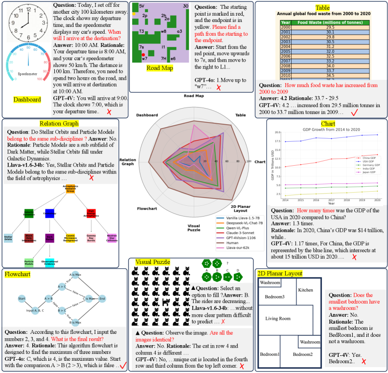
Multimodal Self-Instruct: Synthetic Abstract Image and Visual Reasoning Instruction Using Language Model
Wenqi Zhang, Zhenglin Cheng, Yuanyu He, Mengna Wang, Yongliang Shen, Zeqi Tan, Guiyang Hou, Mingqian He, Yanna Ma, Weiming Lu, Yueting Zhuang
EMNLP 2024
TimeToM: Temporal Space is the Key to Unlocking the Door of Large Language Models' Theory-of-Mind
Guiyang Hou, Wenqi Zhang, Yongliang Shen, Linjuan Wu, Weiming Lu
ACL 2024 (Findings)
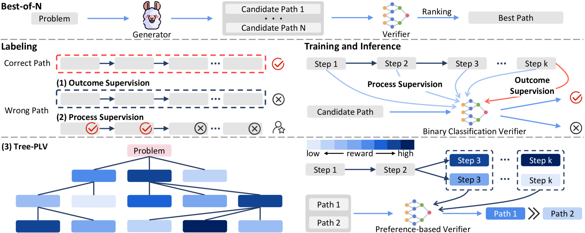
Advancing Process Verification for Large Language Models via Tree-Based Preference Learning
Mingqian He, Yongliang Shen, Wenqi Zhang, Zeqi Tan, Weiming Lu
EMNLP 2024
Specialized Mathematical Solving by a Step-By-Step Expression Chain Generation
Wenqi Zhang, Yongliang Shen, Guiyang Hou, Kuangyi Wang, Weiming Lu
IEEE/ACM Trans. Audio, Speech, Lang. Process. 32 (2024)
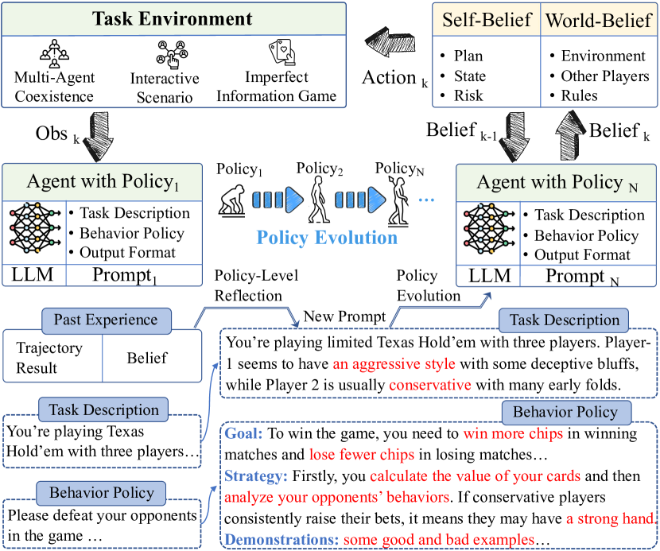
Agent-Pro: Learning to Evolve via Policy-Level Reflection and Optimization
Wenqi Zhang, Ke Tang, Hai Wu, Mengna Wang, Yongliang Shen, Guiyang Hou, Zeqi Tan, Peng Li, Yueting Zhuang, Weiming Lu
ACL 2024
EasyTool: Enhancing LLM-Based Agents with Concise Tool Instruction
Siyu Yuan, Kaitao Song, Jiangjie Chen, Xu Tan, Yongliang Shen, Ren Kan, Dongsheng Li, Deqing Yang
NAACL 2025
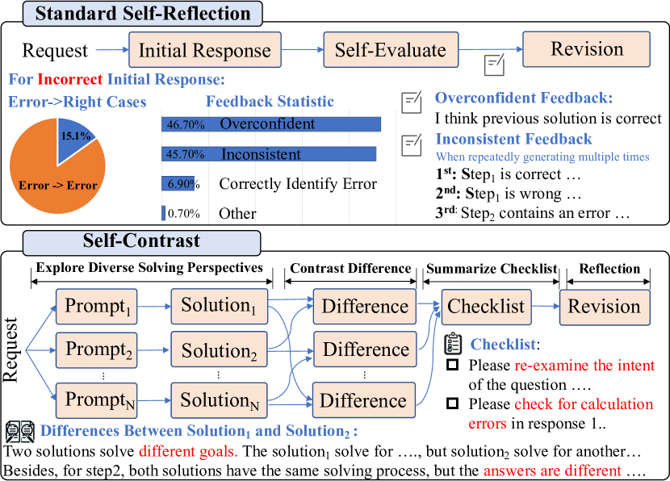
Self-Contrast: Better Reflection Through Inconsistent Solving Perspectives
Wenqi Zhang, Yongliang Shen, Linjuan Wu, Qiuying Peng, Jun Wang, Yueting Zhuang, Weiming Lu
ACL 2024
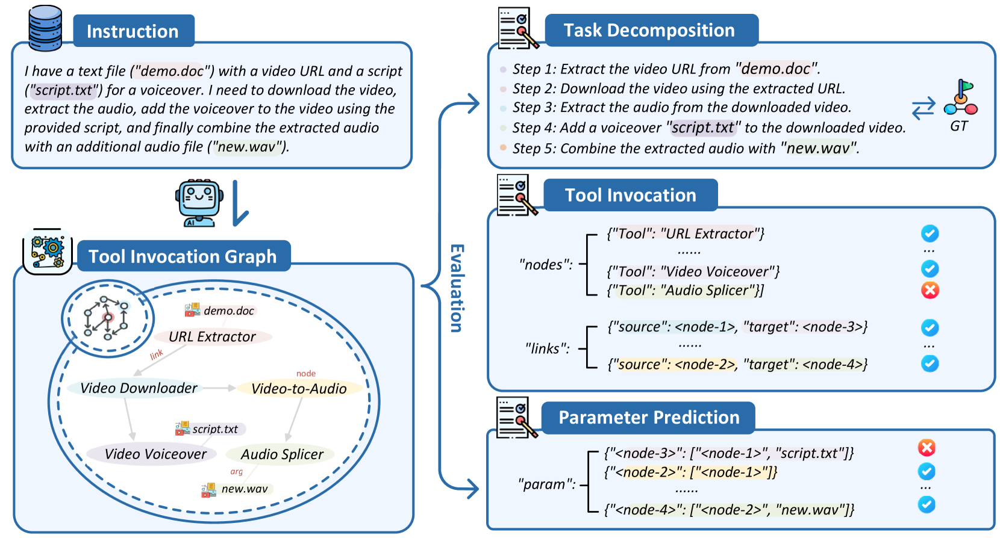
TaskBench: Benchmarking Large Language Models for Task Automation
Yongliang Shen, Kaitao Song, Xu Tan, Wenqi Zhang, Kan Ren, Siyu Yuan, Weiming Lu, Dongsheng Li, Yueting Zhuang
NeurIPS 2024 (Datasets and Benchmarks Track)
2023 and earlier · selected
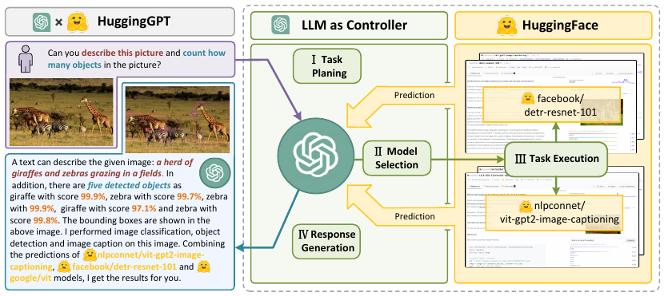
HuggingGPT: Solving AI Tasks with ChatGPT and its Friends in Hugging Face
Yongliang Shen, Kaitao Song, Xu Tan, Dongsheng Li, Weiming Lu, Yueting Zhuang
NeurIPS 2023
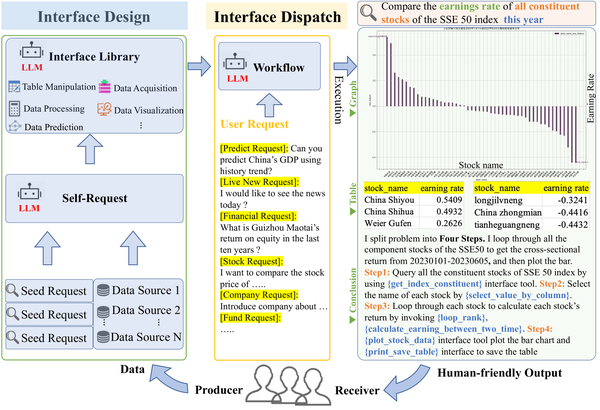
Data-Copilot: Bridging Billions of Data and Humans with Autonomous Workflow
Wenqi Zhang, Yongliang Shen, Weiming Lu, Yueting Zhuang
ICLR@LLM Agents 2023 (Oral)
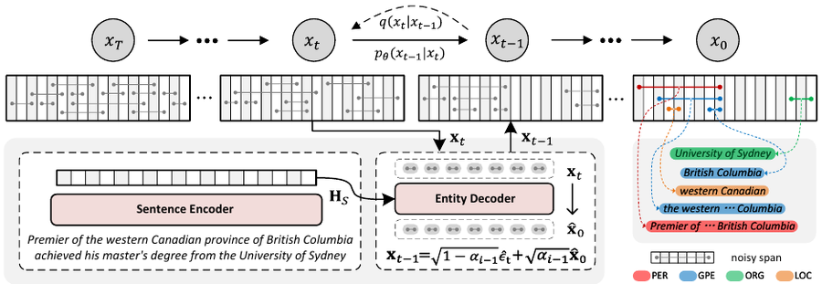
DiffusionNER: Boundary Diffusion for Named Entity Recognition
Yongliang Shen, Kaitao Song, Xu Tan, Dongsheng Li, Weiming Lu, Yueting Zhuang
ACL 2023
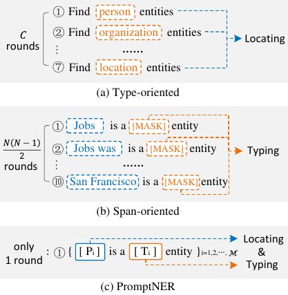
PromptNER: Prompt Locating and Typing for Named Entity Recognition
Yongliang Shen, Zeqi Tan, Shuhui Wu, Wenqi Zhang, Rongsheng Zhang, Yadong Xi, Weiming Lu, Yueting Zhuang
ACL 2023
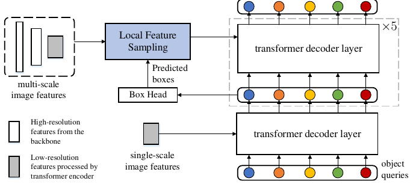
Towards Data-Efficient Detection Transformers
Wen Wang, Jing Zhang, Yang Cao, Yongliang Shen, Dacheng Tao
ECCV 2022
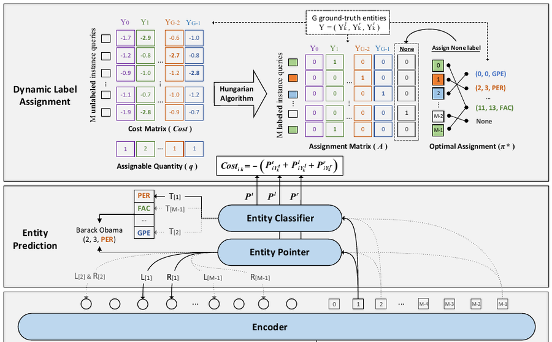
Parallel Instance Query Network for Named Entity Recognition
Yongliang Shen, Xiaobin Wang, Zeqi Tan, Guangwei Xu, Pengjun Xie, Fei Huang, Weiming Lu, Yueting Zhuang
ACL 2022
De-Bias for Generative Extraction in Unified NER Task
Shuai Zhang, Yongliang Shen, Zeqi Tan, Yiquan Wu, Weiming Lu
ACL 2022
DAMO-NLP at SemEval-2022 Task 11: A Knowledge-Based System for Multilingual Named Entity Recognition
Xinyu Wang*, Yongliang Shen*, Jiong Cai*, Tao Wang, Xiaobin Wang, Pengjun Xie, Fei Huang, Weiming Lu, Yueting Zhuang, Kewei Tu, Wei Lu, Yong Jiang
SemEval 2022 BEST SYSTEM
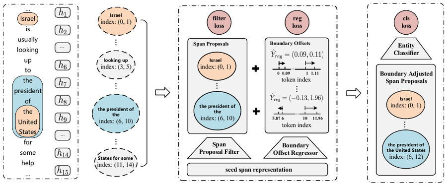
Locate and Label: A Two-Stage Identifier for Nested Named Entity Recognition
Yongliang Shen, Xinyin Ma, Zeqi Tan, Shuai Zhang, Wen Wang, Weiming Lu
ACL 2021
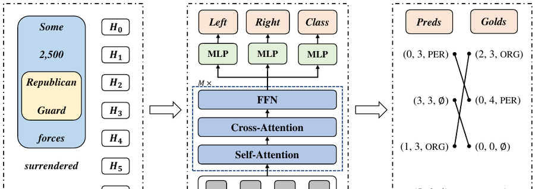
A Sequence-to-Set Network for Nested Named Entity Recognition
Zeqi Tan*, Yongliang Shen*, Shuai Zhang, Weiming Lu, Yueting Zhuang
IJCAI 2021
A Trigger-Sense Memory Flow Framework for Joint Entity and Relation Extraction
Yongliang Shen, Xinyin Ma, Yaliang Tang, Weiming Lu
WWW 2021